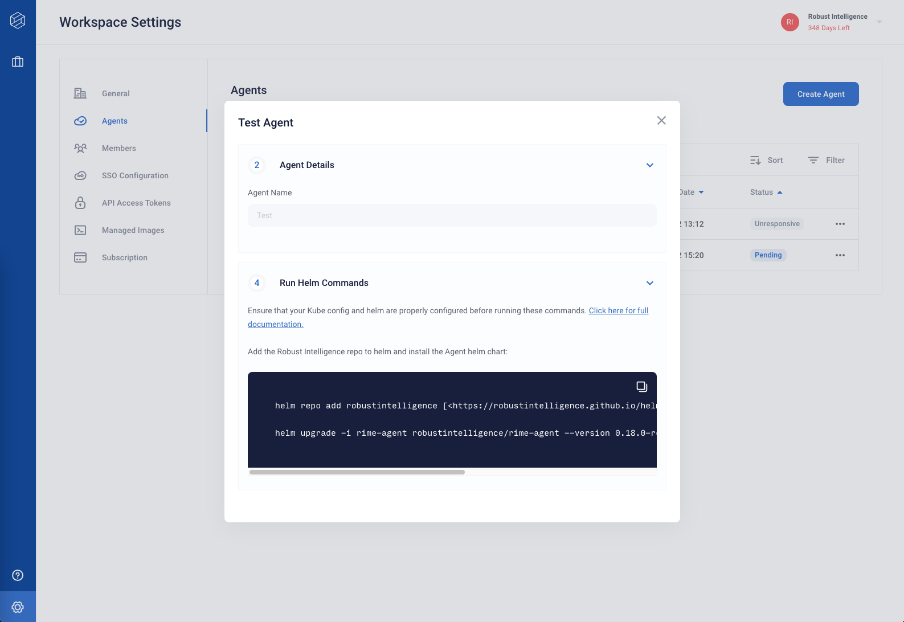

Deploying the Agent
Retrieving the Helm Commands
After completing the Agent Configuration, you should have received some Helm commands to install the agent’s Helm chart.
These commands can also be retrieved by clicking on the row for the agent in the web client.
Installing the Helm Chart
To deploy the agent, simple run the provided commands! Be sure the path to the downloaded <AGENT_NAME>-values.yaml file is correct.
(These are sample commands — the ones you retrieve from the web client will have specific values.)
helm repo add robustintelligence [<https://robustintelligence.github.io/helm/>](<https://robustintelligence.github.io/helm/>) --force-update
helm upgrade -i rime-agent robustintelligence/rime-agent --version <VERSION> --values <PATH TO DOWNLOADED VALUES FILE>
Using the Agent
Once successfully installed, you should see the created agent become “Active” on the Agents page within a couple of minutes.
You can troubleshoot your deployment using kubectl or other observability tools for your cluster:
kubectl get podsshould show 2 running pods (launcher and job monitor). Any errors in configuration or credentials will cause these pods to error. The output from this command should look similar to this:NAME READY STATUS RESTARTS AGE rime-agent-job-monitor-6bddd4697d-t9118 1/1 Running 0 3d6h rime-agent-launcher-56bc47549c-dod60 1/1 Running 0 3d6h
kubectl logs <pod-name>will show logs of the running pods, which can be useful for debugging.
You can continue to use kubectl to debug any issues with your agent and testing jobs once you start using the RI Platform. Running tests on the RI Platform will cause the launcher to create more jobs/pods within the same namespace it is deployed into. Looking for these pods after launching tests can be a good sanity check that things are working properly.
Once your agent is “Active”, you are ready to assign your agent to your workspace and begin running tests using Robust Intelligence!